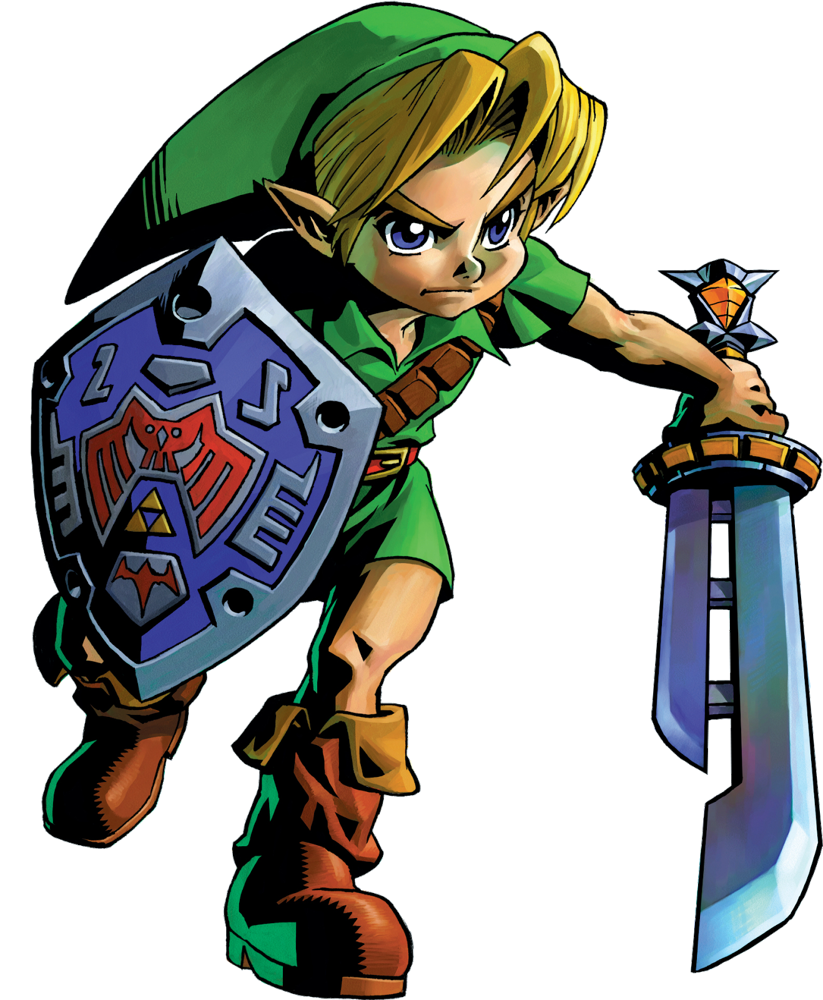

In this timeline link is sent back in time to an era before ganondorf was sent to the sacred realm and alters some events so that ganondorf never claims the triforce which leads to the failed attempt to attack hyrule. Ganondorf is sent to the twilight realm which starts the events of Majora’s Mask,(which is the game I’ll talking about) followed by Twilight Princess, then Four Swords Adventure.
